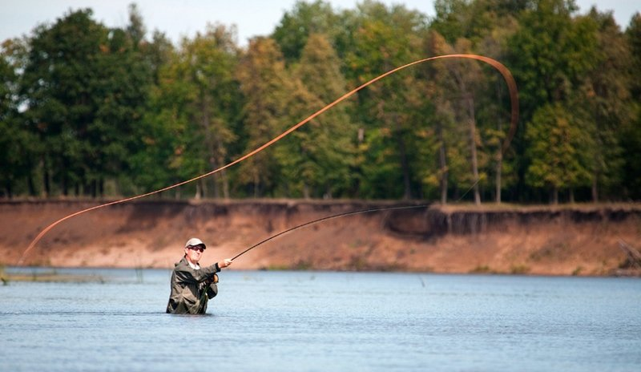

Нахлыст
Нахлыстная рыбалка – это разновидность рыбной ловли, с применением специального удилища и шнура, где приманка (она же мушка) имитирует оказавшееся на поверхности воды насекомое или другое небольшое животное.
Удилище, Катушки нахлыстовой инерционного типа, Шнура нахлыстового, Конектора, Подлеска, Приманки нахлыстовые - они же мушки.
Стримеры . Стримеры часто называют приманкой рыболовы-нахлыстовики. Эти мушки очень похожи на нимф, но они крупнее и напоминают существ вроде пескарей или пиявок. В отличие от сухих мушек и нимф, которые вы оставляете на воде или в воде, вы будете перемещать стримерную мушку рывками, дергая за леску.
Удачной вам рыбалки
| Параметр | Описанние |
|---|---|
| Экипировка | Удилище, катушка, несколько отрезов лески, отличных друг от друга по характеристикам, приманка. |
| Основные виды рыб | Форель, лосось, язь, голавль, окунь, щука, лещ, плотва, ленка, хариуса. |
| Приманки | Стримеры, сухие мушки, мокрые мушки, чешским нимфингом, французским нимфовым способом |
| Техники ловли | Нахлыстовая удочка, спиннинговых или поплавочных удочек. |
| Сезон | Апрель – июнь, июнь – август, сентябрь – ноябрь, весна и осень – лучшие сезоны |
| Особенности | Специфика снасти, Особая техника заброса, Типы мушек, Разные способы ловли, Эмоции и атмосфера. |